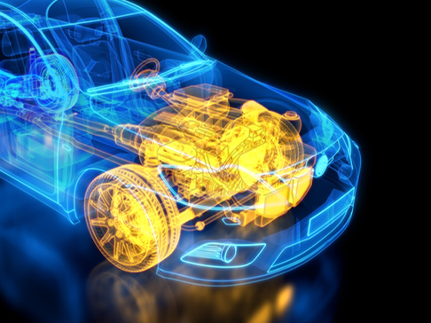

Technology
차별화된 변화를 만드는 포드 머스탱
ECOBOOST
최고의 엔진상을 수상한 에코부스트 엔진은 포드 역사상 기술적으로 가장 뛰어난 엔진입니다.
탁월한 성능은 물론, 20% 개선된 연비까지 자랑하며 연비와 성능을 동시에 잡았습니다.
혁신적인 기술

에코부스트 엔진을 최초로 탑재한 머스탱이 출시되었습니다. 작아진 엔진에도 불구하고 3.7L V6보다 향상된 314마력(PS)의 파워를 자랑합니다.
-
International Engine of the year -
3년 연속 최고의 엔진상 -
4년 연속 1.0L 이하 최고의 엔진상 -
2012 최고의 새 엔진상